Abstract
Project Organization and Workflow Integration
.png)
Comprehensive Phenotyping Pipeline
.png)
Plant Growth and Phenotyping Version 2 Dataset
This study introduces the expanded Plant Growth and Phenotyping Version 2 dataset (PGP v2), which substantially increases both scale and diversity from the initial release, comprising approximately 220,000 plant images spanning four crop species—corn, cotton, rice, and sorghum—under controlled greenhouse conditions. Across the dataset, each plant image is paired with complementary metadata describing treatment variables, environmental conditions, and temporal indices, creating a standardized platform for training and benchmarking analytical models. The dataset was designed to support reproducible monitoring of phenological development, stress responses, and trait estimation across multiple plant growth stages while preserving the fidelity required for downstream segmentation and classification workflows.
Dataset Samples
Corn (~14,000 images)
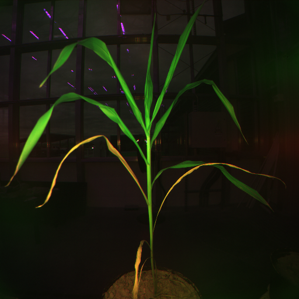
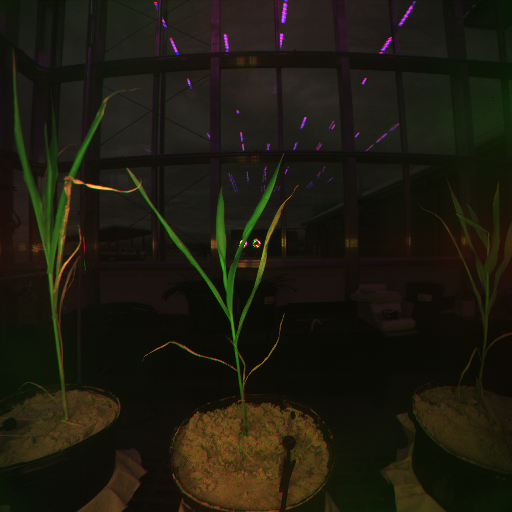
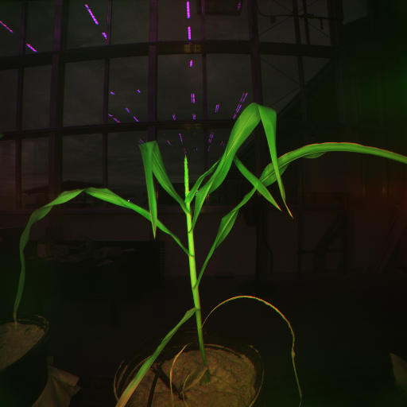
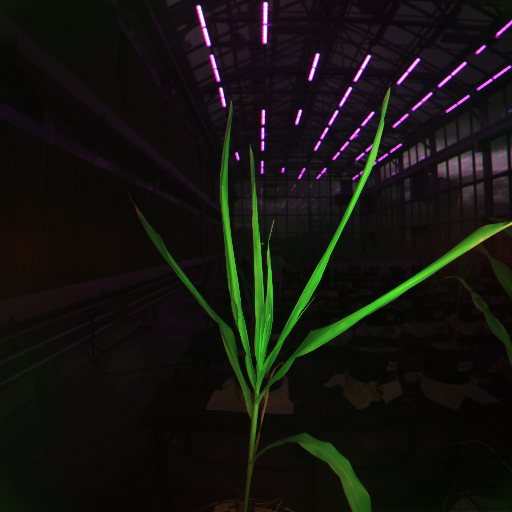
Cotton (~27,000 images)
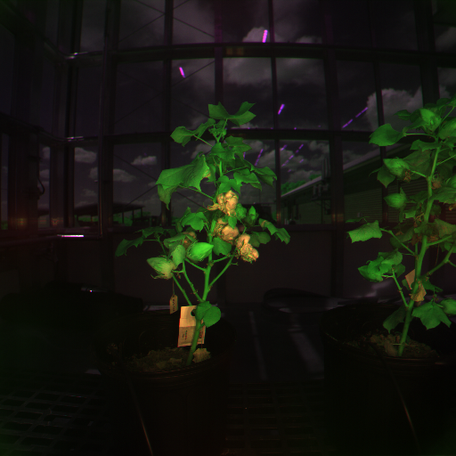
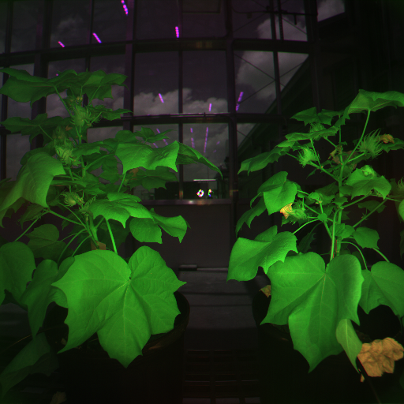
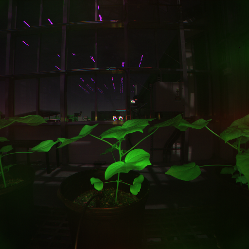
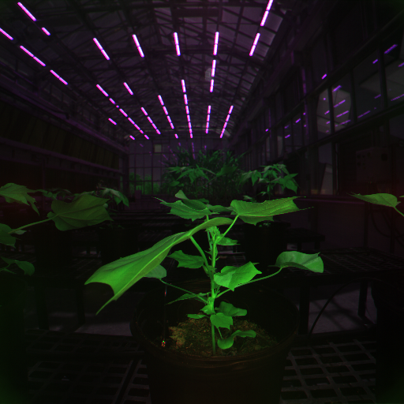
Rice (~1,376 images)
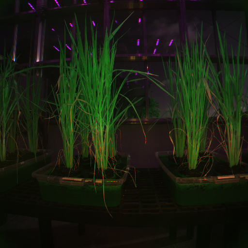
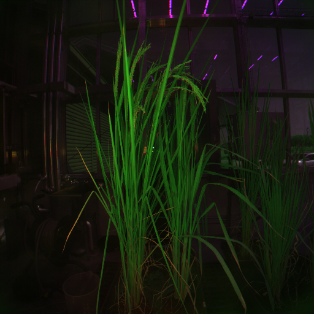
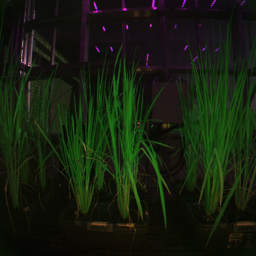
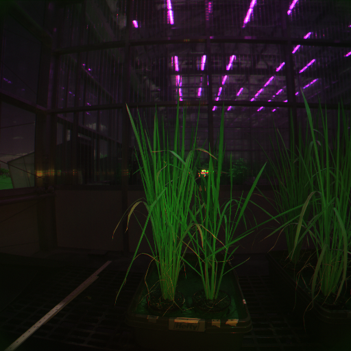
Sorghum (~10,608 images)
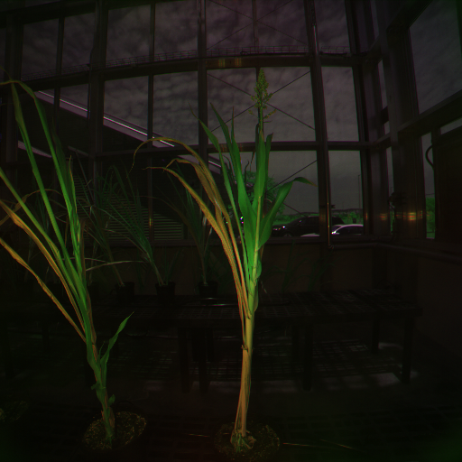
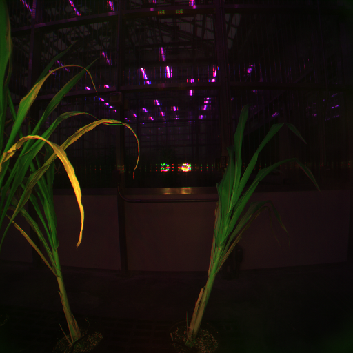
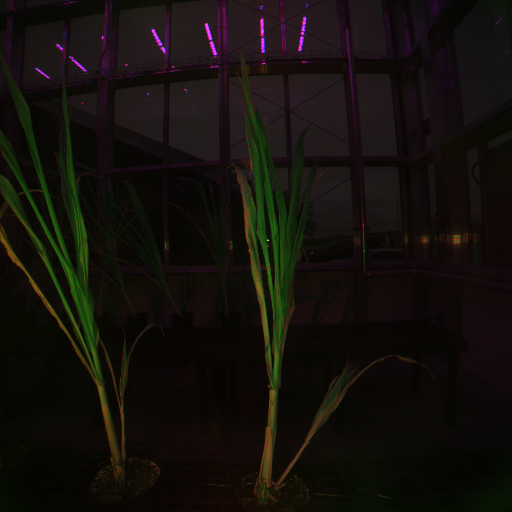
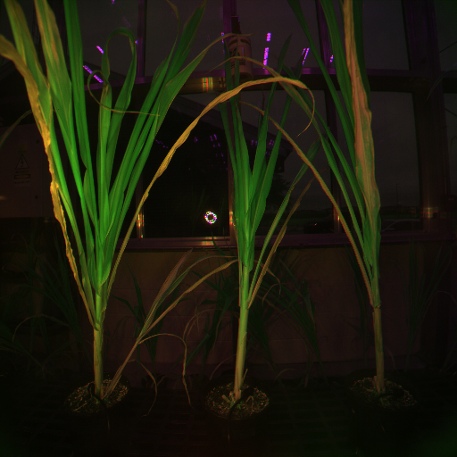
Citation
Nia, F. O., Peeples, J., Murray, S. C., McFarland, A., Vann, T., Salehi, S., Hardin, R., Baltensperger, D. D., Ibrahim, A. M. H., Thomasson, J. A., Fadamiro, H., Subramanian, N. K., Pillai, S. D., Roston, R., Ishimwe, J., Basak, D., Oladepo, N., & Vysyaraju, U. (2026). A data-driven image extraction and analysis pipeline for plant phenotyping in controlled environments. The Plant Phenome Journal, 9(1), e70116. https://doi.org/10.1002/ppj2.70116
@article{nia2026datadriven,
title = {A data-driven image extraction and analysis pipeline for plant phenotyping in controlled environments},
author = {Nia, Fahimeh Orvati and Peeples, Joshua and Murray, Seth C. and McFarland, Andrew and Vann, Troy and Salehi, Shima and Hardin, Robert and Baltensperger, David D. and Ibrahim, Amir M. H. and Thomasson, J. Alex and Fadamiro, Henry and Subramanian, Nithya K. and Pillai, Suresh D. and Roston, Rebecca and Ishimwe, Joslin and Basak, Diptadeep and Oladepo, Nazar and Vysyaraju, Uday},
journal = {The Plant Phenome Journal},
volume = {9},
number = {1},
pages = {e70116},
year = {2026},
publisher = {Wiley},
doi = {10.1002/ppj2.70116},
url = {https://doi.org/10.1002/ppj2.70116}
}